Part A: The Power of Diffusion Models
Part 0: Setup
Here are the prompts I used:
- "a high resolution studio portrait of a dog wearing a bowtie"
- "an oil painting of a ship sailing on a sea of grass"
- "a cinematic photo of the UC Berkeley campus"
- "a macro close up shot of a jumping spider"
- "a realistic iphone photo of a chef flipping a burger"
- "a panoramic view of the grand canyon filled with candy"
- "a photo of a cat"
- "a photo of a car"
- "an oil painting of a snowy village"
- "an oil painting of a birthday party"
- "a portrait of a queen"
- "a portrait of a tree"
- "a photo of a bee"
- "a photo of a sunset"
Play with the Model: Text-to-Image
The following images were generated using these prompts:
- "a high resolution studio portrait of a dog wearing a bowtie"
- "a panoramic view of the grand canyon filled with candy"
- "a macro close up shot of a jumping spider"
Additionally, I set a random seed for reproducibility at 100.

Bowtie Dog (10 steps)
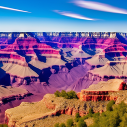
Grand Canyon (10 steps)
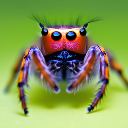
Jumping Spider (10 steps)
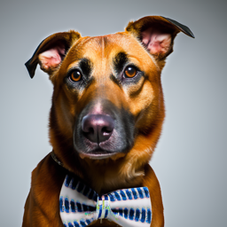
Bowtie Dog (20 steps)
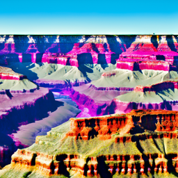
Grand Canyon (20 steps)
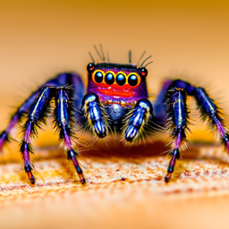
Jumping Spider (20 steps)
The quality of the images is reasonably high, and generally reflected the prompt well. It also seems that generally, as the number of steps goes up, the detail and quality of the image increases as well.The only one out of the three that was quite different from the prompt was the Grand Canyon filled with candy. This could be due to the model's difficulty in interpreting complex or unusual scenes.
1.1 Forward Diffusion
To implement forward diffusion, I had to code out the following equation:
\(x_t = \sqrt{\bar{\alpha_t}} x_0 + \sqrt{1 - \bar{\alpha_t}} \epsilon\). To this end, I first got the \(\bar{\alpha_t}\) value from the alphas_cumprod array, which I then used to compute \(\bar{x_t}\) according to the equation above, also using a randomly sampled noise \(\epsilon\). The resulting noisy images for different time steps are shown below.

Original

t = 250

t = 500

t = 750
1.2 Classical Denoising
To implement classical denoising, I simply used torchvision.transforms.functional.gaussian_blur. The results are shown below.
Noisy (t = 250)
Noisy (t = 500)
Noisy (t = 750)

Gaussian Blur (t = 250)

Gaussian Blur (t = 500)

Gaussian Blur (t = 750)
A Gaussian blur is applied to the noisy images to perform classical denoising. As you can see in the results above, the blur does smooth out the noise but still results in quite noisy and bad images.
1.3 One-Step Denoising
To implement one-step denoising, I essentially do the inverse of the forward diffusion process. Given a noisy image, I use the pretrained diffusion model to predict the noise, and then use that to estimate the clean image.
Noisy (t = 250)
Noisy (t = 500)
Noisy (t = 750)
One-Step Denoising (t = 250)
One-Step Denoising (t = 500)
One-Step Denoising (t = 750)
With the pretrained diffusion model, one-step denoising significantly improves the image quality compared to the classical denoising. However, as the last image shows, at high noises, it is still quite ineffective and blurry.
1.4 Iterative Denoising
To implement iterative denoising, I divided the timesteps into intervals of 30, rather than performing the entire denoising in a single step. In the loop, I step from the starting timestep index down to the end, updating the image at each interval. At each step, I apply the denoising process similar to the one-step method, but iteratively for each time range, and save the predicted image at each stage.
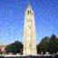
Noisy Campanile (t = 90)
Noisy Campanile (t = 240)
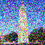
Noisy Campanile (t = 390)
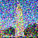
Noisy Campanile (t = 540)
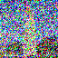
Noisy Campanile (t = 690)
Original (campanile.png)
Iterative Denoising Output
One-Step Denoising Output
Gaussian Blur (t = 750)
1.5 Diffusion Model Sampling

Sample 1

Sample 4
1.6 Classifier-Free Guidance
To implement the classifier-free guidance, we essentially use the code from the previous section, but modify the noise estimation. We generate both a noise estimate with and without conditioning, then combine them to guide the sampling process more effectively. We combine them using the equation \(\epsilon = \epsilon_u + \gamma (\epsilon_c - \epsilon_u)\). This results in the following images, which look much better!
1.7 Image-to-image Translation
For image-to-image translation, we begin the denoising process from an intermediate timestep by providing a partially noised image, rather than starting from pure noise. The diffusion model then denoises this input, effectively translating it into a new image. Notably, the later the starting timestep (i.e., the less noise added), the more the output resembles the original image, since less transformation occurs during denoising.
Campanile
(original)
1.7.1 Editing Hand-Drawn and Web Images
Here, we do the same image-to-image translation process as before, starting the denoising from various intermediate timesteps to observe how the output changes with different levels of initial noise.

Cube
(i_start = 5)

Eye
(i_start = 7)
1.7.2 Inpainting
To facilitate inpainting, we simply change the equation for the denoising process. When the mask is zero, we keep the original pixel value, and otherwise, we apply the denoising step as usual. This leads to the dark regions of the mask being preserved while the white regions are filled in with new content generated by the model.

campanile

Mask

Hole to Fill
campanile inpainted
(wizard hat???)
dog inpainted
(no more ball :()
1.7.3 Text-Conditioned Image-to-Image Translations
To implement text-conditioned Image-to-Image translations, we simply change the conditioned prompt embeddings from simply "a high quality photo" (corresponding to the natural image manifold) to whatever prompt we desire.
The prompts used for each image are as follows:
- Amalfi: "a photo of the amalfi cost"
- Chef: "'a realistic iphone photo of a chef flipping a burger'"
- Sunset: "a photo of a sunset"
Campanile

Sunset
Noise level 1
1.8 Visual Anagrams
To implement these visual anagrams, I modified the usual iterative denoising process to enforce two textual constraints simultaneously. First, I run the image through the UNet using the first prompt embedding, applying classifier-free guidance with an unconditional noise estimate. Then, I flip the image, and run it through the UNet again using the second prompt embedding, then I average the results to create a single image that satisfies both prompts.
1.9 Hybrid Images
To generate hybrid images, I combined low frequency information from one prompt with high frequency information from the other. To do this, I run a given image through the UNet twice, once conditioned on the first prompt and again conditioned on the second prompt. Then, I applied a Gaussian blur to extract the low frequency components from the first prompt's noise. For the second prompt's noise, I subtracted the Gaussian blur of itself from itself to get the high frequency components. Adding these together produces the final hybrid image.
a photo of a bee, and a photo of a sunset
a photo of a cat, and a painting of a ship sailing a sea of grass
Part B: Flow Matching from Scratch!
Part 1: Training a Single-Step Denoising UNet
Visualization of the Noising Process
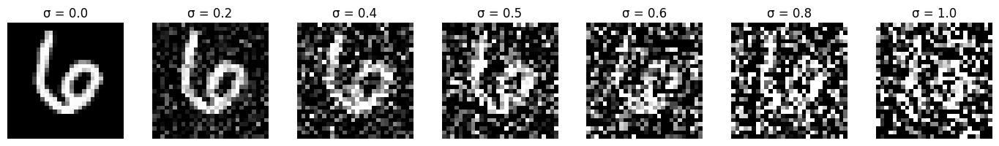
Visualization of noise levels during the noising process
Training the UNet
Implementing the UNet was relatively straightforward. I first filled out all the blocks (Conv, DownConv, UpConv, etc.) and then assembled them into the full UNet architecture, which included downsampling and upsampling paths, with skip connections between them. The training loss curve is shown below:
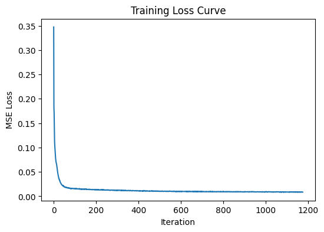
Training loss curve for the single-step denoising UNet
Sample results within distribution
Here are some sample results with noise level 0.5 after epochs 1 and 5. It is clear that after epoch 1, there is some imprint of the original image, but after epoch 5, the denoised image is very similar to the original.
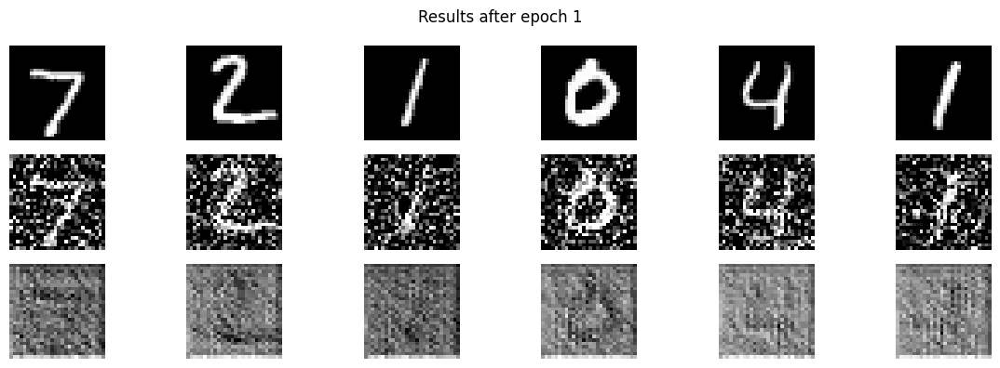
Epoch 1 (noise level 0.5)
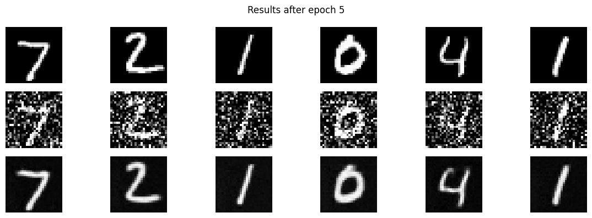
Epoch 5 (noise level 0.5)
Sample results out of distribution
Here are some sample results out of distribution. It is clear that while it still is effective at some noise levels, once the noise level gets too high, the denoised images become noticeably worse. In the following visual, original images are on the left, the noisy images are in the middle, and the denoised images are on the right.
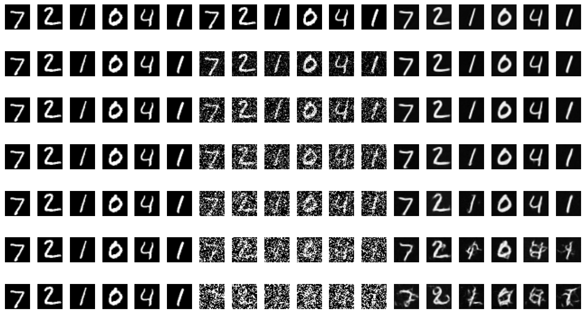
Out-of-distribution: Visualization of noise levels (top to bottom: 0.0, 0.2, 0.4, 0.5, 0.6, 0.8, 1.0)
Denoising Pure Noise
We use the UNet to denoise pure, random Gaussian noise. Here is the training loss curve for this process. It is noticeable that the loss is higher than the loss curve from training the UNet on images from the dataset, which is expected since denoising pure noise is a more difficult task.
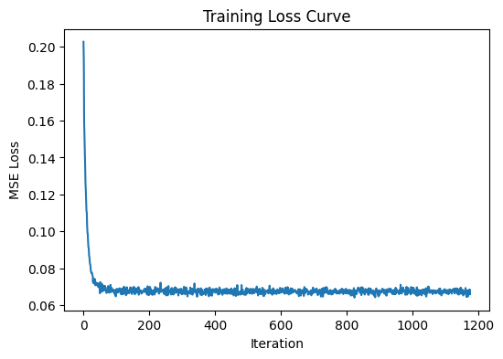
Training loss curve for denoising pure noise
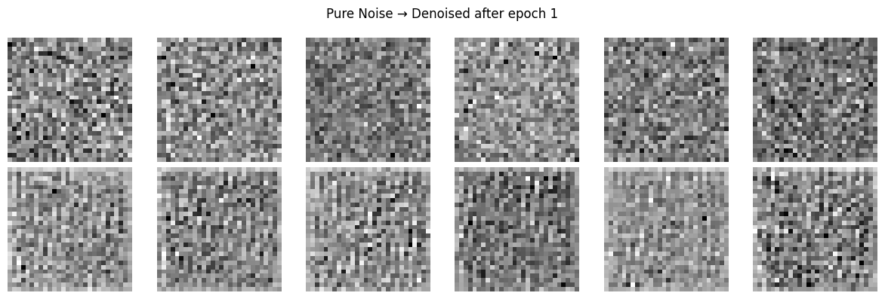
Denoising pure noise – Epoch 1
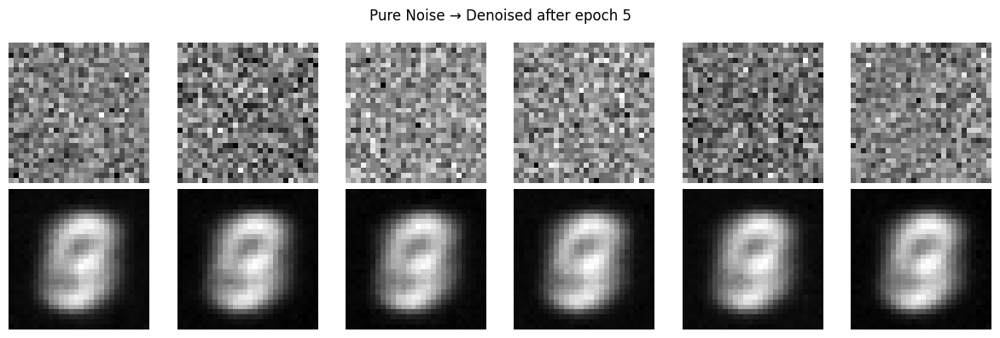
Denoising pure noise – Epoch 5
For epoch 1, the model maps it to some vague noise pattern, and on epoch 5, the model generates the same roughly "8"-shaped pattern each time. This could be because the model has collapsed to predicting the mean of the MNIST distribution, which would minimize the MSE loss without conditioning.
Part 2: Training a Flow Matching Model
Part 2.1: Adding Time Conditioning to the UNet
To add time conditioning to the UNet, I added two new FCBlocks (fully-connected blocks), which consist of a linear layer, a GELU activation, and another linear layer. These blocks take in the time t and are injected into the UNet during the upsampling stage.
Part 2.2: Training the UNet
The training plot for the time-conditioned UNet is shown below.
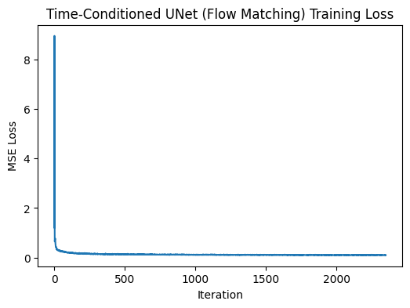
Training loss curve for the time-conditioned UNet
Part 2.3: Sampling from the UNet
Again, we pass in noise to the model and sample from it after epochs 1, 5, and 10.
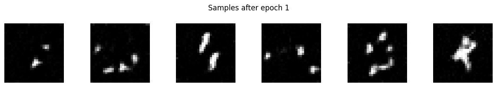
Sampling result – Epoch 1
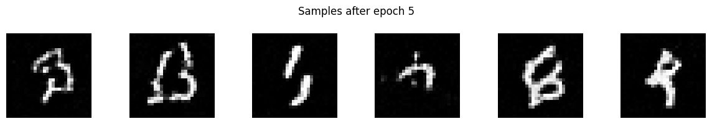
Sampling result – Epoch 5
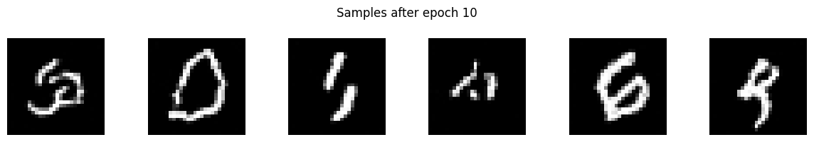
Sampling result – Epoch 10
The results are pretty bad, but there is some structure emerging by epoch 10.
Part 2.4: Adding Class-Conditioning to UNet
Similar to the time conditioning, I added another two FCBlocks that take in the one-hot encoded class labels and inject them along with the time conditioning during the upsampling stage.
Part 2.5: Training the UNet (Class-Conditioned)
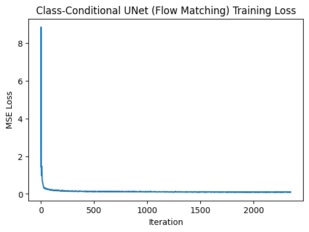
Training loss curve for the class-conditioned UNet
Part 2.6: Sampling from the UNet (Class-Conditioned)
Finally, we sample from the class-conditioned UNet after epochs 1, 5, and 10.
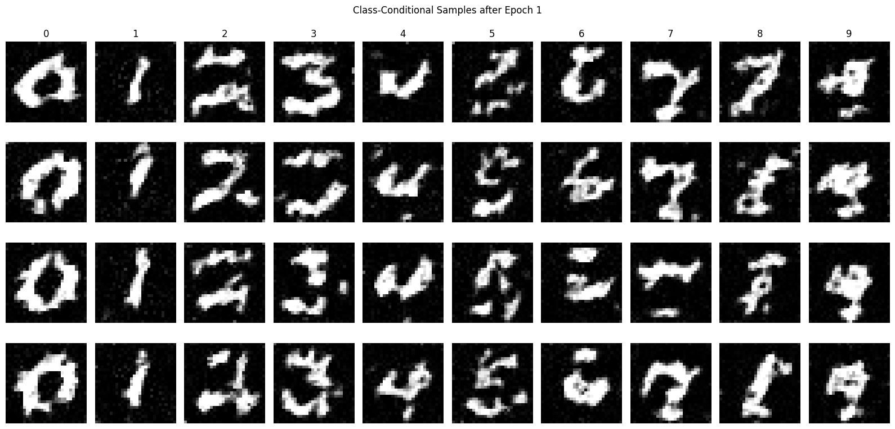
Sampling result – Epoch 1
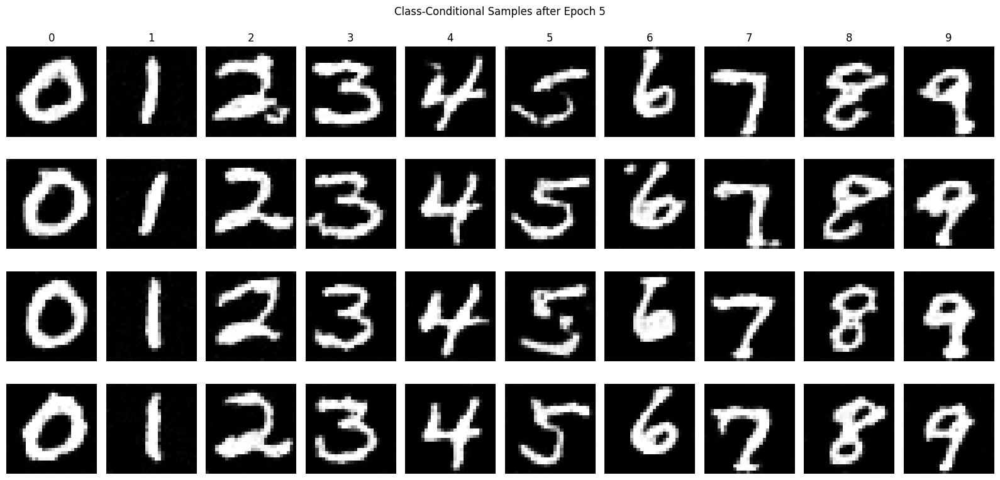
Sampling result – Epoch 5
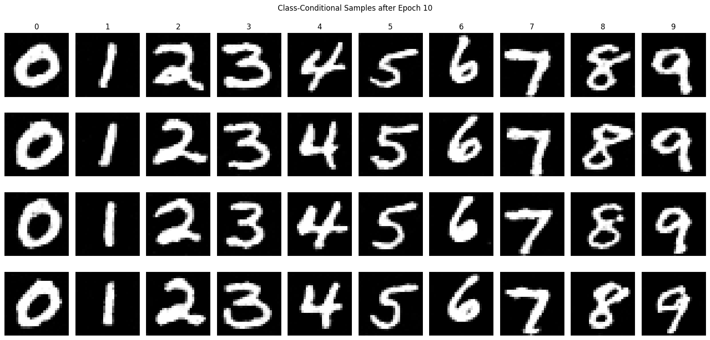
Sampling result – Epoch 10
It is evident that by the 10th epoch, the model is generating very convincing MNIST digits that correspond to the class labels! Yay!
Getting rid of that pesky learning rate scheduler
To remove the learning rate scheduler, I simply removed the scheduler and decreased the starting learning rate to 5e-3. This seemed to work well enough without any major issues.
Sampling from the UNet (No Scheduler)
Here are the sampling results after epochs 1, 5, and 10 with no learning rate scheduler:
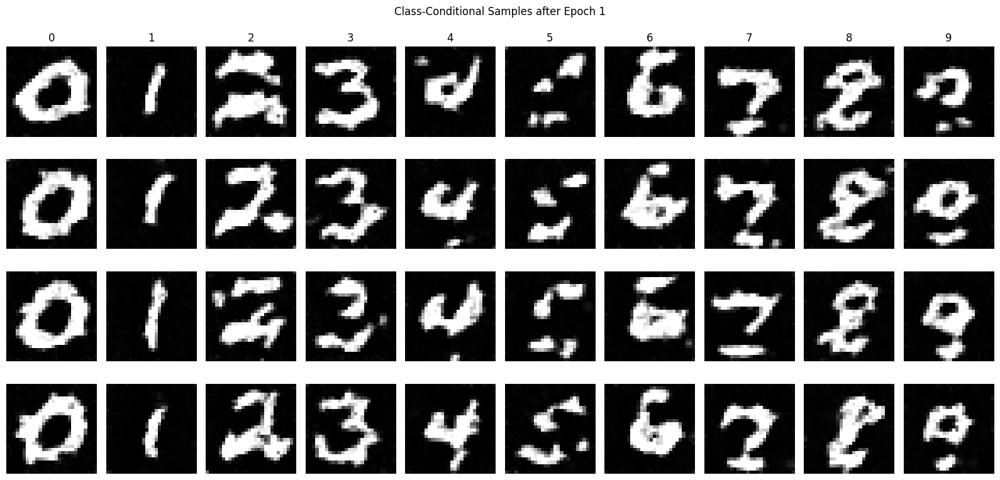
Sampling result – Epoch 1 (no scheduler)
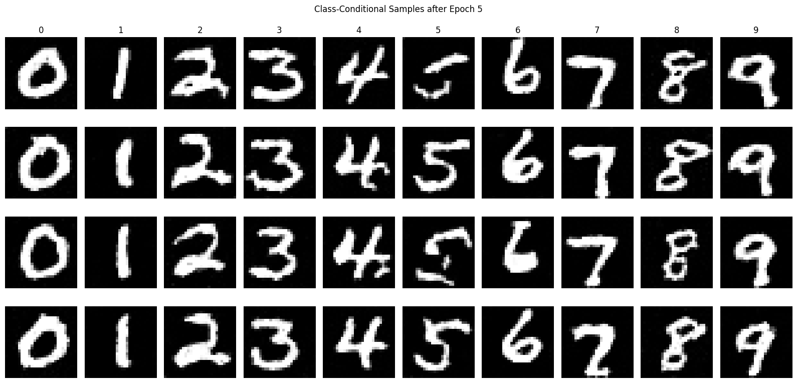
Sampling result – Epoch 5 (no scheduler)
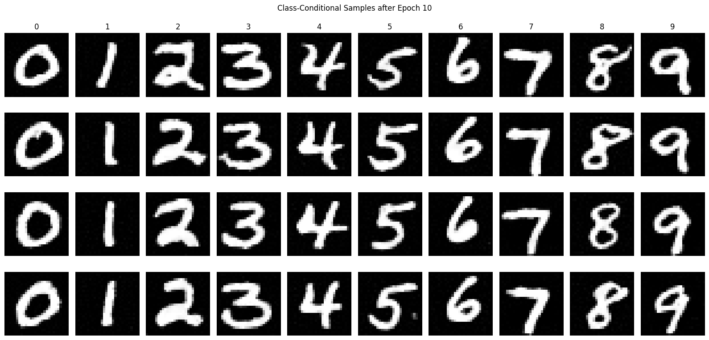
Sampling result – Epoch 10 (no scheduler)